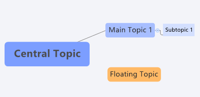
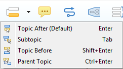
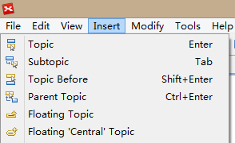
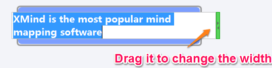
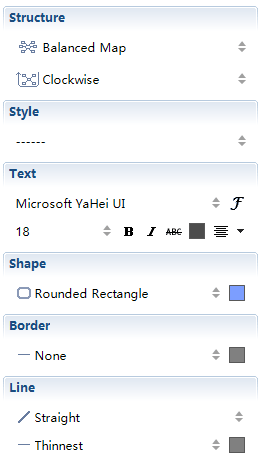
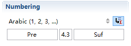

Topic
Topic TypeXMind has four different topic types: Central Topic, Main topic, Subtopic and Floating Topic.

- Central Topic: As the starting point of any mind map, central topic stands for the core idea of the mind map.
- Main Topic: As the first level of boxes around Central Topic, main topics are the main branches of your core idea.
- Subtopic: They are the child topics of main topic and floating topic. We normally use them to record more details.
- Floating Topic: Not belonging to any other topics, floating topics can be located anywhere on the map as indepandent ideas. Normally, they have a blurry or weak relationship with the other topics
- There are several ways to create topics: shortcuts, toolbar, menu commands and mouse.
- Shortcuts:
- Enter: creating a main topic or a topic on the same level.
- Tab/Insert: creating a subtopic.
- Shift +Enter: creating a topic on the same level, but before the currently selected topic.
- Ctrl +Enter: creating a parent topic of the currently selected topic.
- Toolbar: Click the icons below to create the corresponding topics
 - Menu Commands:
- Topic：creating a main topic or a topic on the same level.
- Subtopic: creating a subtopic.
- Before Topic: creating a topic on the same level, but before the current topic.
- Parent Topic: creating a parent of the currently selected topic.
- Floating 'Central' Topic: creating a floating topic which has the same attributes as the central topic.
- Floating Topic: creating a floating topic which has the same attributes as a main topic.
- Mouse:
- Right-click on the topic: "Insert -> Topic/Subtopic"
- Double-click on a blank space: Creating a floating topic.
- Right-click on a blank space: "Floating Topic / Floating 'Central' Topic".
Note: You should select a topic before creating subtopics.
Edit Topic
- Edit Text
- Right-click and choose 'Edit' on the menu.
- Double click the topic.
- Press "F2" on your keyboard.
- Press "Spacebar" on your keyboard.
- Delete Topic
- Choose "Edit > Delete" on the menu.
- Right-click and choose 'Delete'.
- Click delete icon on the toolbar.
- Use shortcut key: "Delete"
- Set the width of the box
- Select a topic, and enter into Edit Mode.
- Drag and move the slide on the right of the topic box to change the Topic Width.

Note: The topic width will adjust to the width of the text as you editing, but you can make the width narrower by dragging the slide as described above.
Topic Properties
- Select the topic, and click "View - Properties" from the menu
- Then, you can make the following changes:
- Structure: reorganize the layout of the mind map/ the branch.
- Style: modify all properties settings by selecting one existing style design.
- Text: change the text font, size, type, color, and alignment.
- Shape: select the topic's shape and background color.
- Border: define the line type, width and color of the topic's border.
- Line: design the line type, width, and color.

Free Position
Under the default structure (Map Clockwise) of XMind, we are arrange the topic's position.
- Ctrl(Alt on Mac) : Copy selected topic(s) to new position.
- Alt(Command on Mac) : Move selected Main Topic(s) to new position as desired.
- Shift : Move selected topic(s) to new position as floating topic(s).
Number the topics
- Select multiple topics, and click "View - Properties" from the menu.
- Set the numbering properties below
- Choose number style: There are four styles for choice, and None to cancel number.
- Inherit parents' number: Enabling this by clicking the icon will let subtopics inherit the number from parents' topics.
- Pre and Suf: You can enter prefix number in the Pre field to appear before the Number, or enter suffix numbers in the Suf field to appear after "dot".
